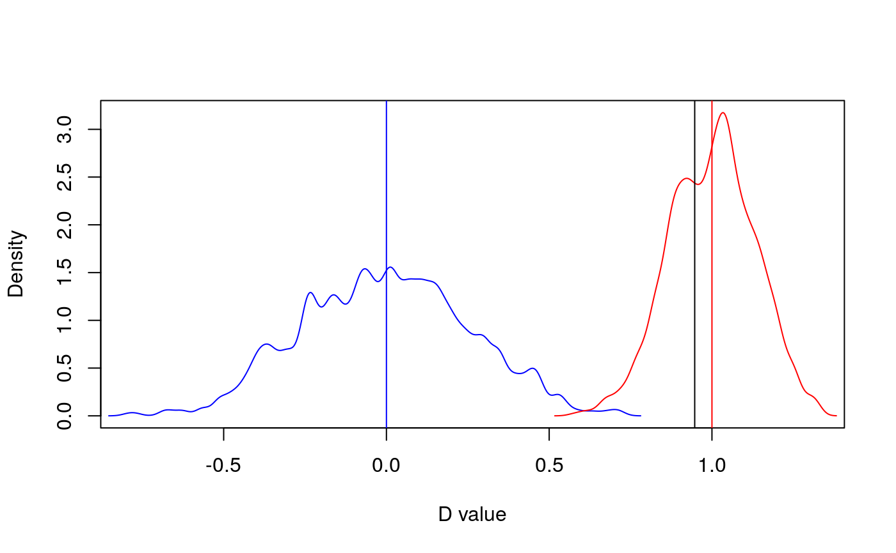
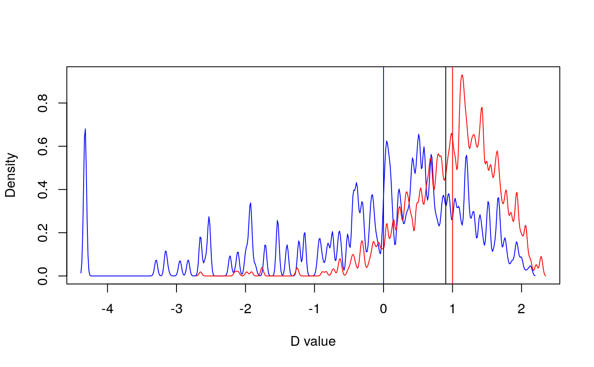

Calculates D statistic (Fritz & Purvis 2010), a measure of phylogenetic
signal, for missing data. Missingness is recoded into a binary variable
(1=missing, 0=non missing). This function is an adaptation of
phylo.d for missing data.
miss.phylo.d(data, phy, ...)
| data | Data frame containing species traits with species as row names. |
|---|---|
| phy | A phylogeny (class 'phylo', see ? |
| ... | Further arguments to be passed to |
The function miss.phylo.d returns an object of class "phylo.d" with the following
components, for complete list of arguments see phylo.d :
DEstimate: The estimated D value
Pval1: A p value, giving the result of testing whether D is significantly different from one
Pval0: A p value, giving the result of testing whether D is significantly different from zero
The function also prints the percentage of missing data per variable in the dataset.
This function builds on phylo.d to calculate a phylogenetic signal
in missing data. The variable of interest, usually a trait, is recoded into a binary variable
(1=missing data, 0=non missing data). Then the phylo.d function tests the estimated
D value for significant departure from both random association and the clumping expected under a Brownian
evolution threshold model (Fritz & Purvis, 2010).
Output can be visualised using print() and plot()
Paterno, G. B., Penone, C. Werner, G. D. A. sensiPhy: An r-package for sensitivity analysis in phylogenetic comparative methods. Methods in Ecology and Evolution 2018, 9(6):1461-1467
Fritz, S. A. and Purvis, A. (2010). Selectivity in mammalian extinction risk and threat types: a new measure of phylogenetic signal strength in binary traits. Conservation Biology, 24(4):1042-1051.
David Orme, Rob Freckleton, Gavin Thomas, Thomas Petzoldt, Susanne Fritz, Nick Isaac and Will Pearse (2013). caper: Comparative Analyses of Phylogenetics and Evolution in R. R package version 0.5.2. https://CRAN.R-project.org/package=caper
#>#># Load data data(primates) data<-alien$data phy=alien$phy[[1]] # Test phylogenetic signal for missing data: sexNAsig <- miss.phylo.d(data,phy,binvar=homeRange)#> [1] "Percentage of missing data in traits:" #> family adultMass gestaLen homeRange SD_mass SD_gesta SD_range #> 0.00 2.13 9.57 44.68 2.13 9.57 44.68print(sexNAsig)#> #> Calculation of D statistic for the phylogenetic structure of a binary variable #> #> Data : data #> Binary variable : homeRange #> Counts of states: 0 = 52 #> 1 = 42 #> Phylogeny : phy #> Number of permutations : 1000 #> #> Estimated D : 0.9470363 #> Probability of E(D) resulting from no (random) phylogenetic structure : 0.35 #> Probability of E(D) resulting from Brownian phylogenetic structure : 0 #>plot(sexNAsig)massNAsig <- miss.phylo.d(data,phy,binvar=adultMass)#> [1] "Percentage of missing data in traits:" #> family adultMass gestaLen homeRange SD_mass SD_gesta SD_range #> 0.00 2.13 9.57 44.68 2.13 9.57 44.68print(massNAsig)#> #> Calculation of D statistic for the phylogenetic structure of a binary variable #> #> Data : data #> Binary variable : adultMass #> Counts of states: 0 = 92 #> 1 = 2 #> Phylogeny : phy #> Number of permutations : 1000 #> #> Estimated D : 0.9014547 #> Probability of E(D) resulting from no (random) phylogenetic structure : 0.385 #> Probability of E(D) resulting from Brownian phylogenetic structure : 0.266 #>plot(massNAsig)